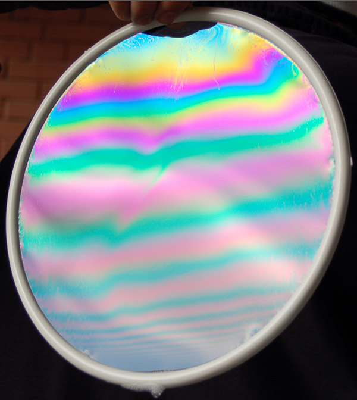

Reflection and Interference from a Soap Film
The interference colors from a soap film can be related to the thickness of the film by using the interference condition and noting that there is a 180 degree phase change upon reflection from the film surface, but no phase change for the reflection from the back surface. The color seen depends also upon the angle of view.

The image above is courtesy of Eray Canli, at student at Middle East Technical University in Turkey. He made the photo in his optics course project.
The fringes below were recorded with an 8mm camcorder with a closeup lens attached. The soap film was formed by dipping a loop formed by thumb and forefinger into a concentrated solution of dishwashing detergent. Note that you see red at three different angles, showing that three orders of reflection have been spanned. Bands of color can also be seen if the film thickness is varying. Images courtesy of Brian Dalton.
|